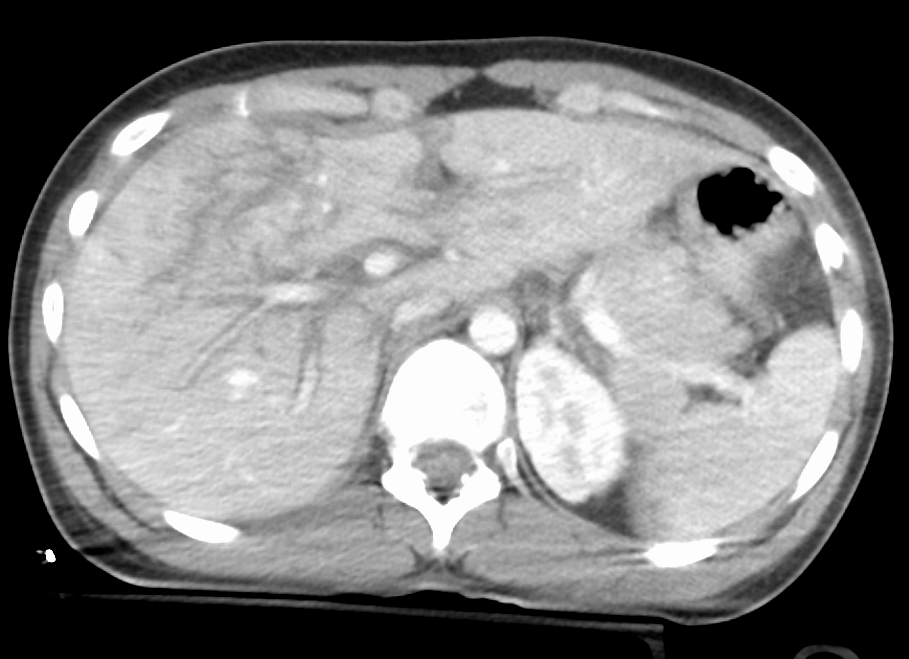
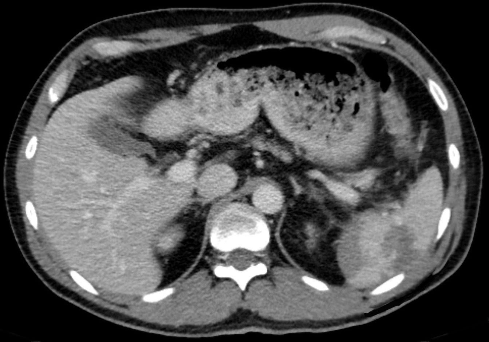

观察 · 对比 · 复评Observe · Compare · Reassess
观察线索Observation cues
机制与腹部表现必须和生命体征趋势放在同一时间轴，而不是只看一张静态图片。Mechanism and abdominal findings belong on the same timeline as vital-sign trends, not in one static snapshot.
source_required聚焦机制、腹部体征、灌注趋势和 FAST/EFAST 信息节点。课程帮助学习者理解 C/E 的衔接，不写手术或介入选择算法。Focus on mechanism, abdominal findings, perfusion trend, and FAST/EFAST as information nodes. The course helps learners connect C/E without writing surgical or interventional choice algorithms.
趋势数值取自本模块关联的脱敏教学病例，仅用于练习比较前后变化，不构成处置阈值。Trend values come from the linked de-identified teaching case and are used only to compare change, not as treatment thresholds.
把机制、腹部线索、灌注趋势和床旁超声信息放到同一条路线里。Place mechanism, abdominal cues, perfusion trend, and bedside ultrasound information on one route.
机制与腹部表现必须和生命体征趋势放在同一时间轴，而不是只看一张静态图片。Mechanism and abdominal findings belong on the same timeline as vital-sign trends, not in one static snapshot.
source_required床旁超声回答有限问题；结果必须回到床边表现、趋势和未知项。Bedside ultrasound answers a limited question; its result returns to findings, trend, and unknowns.
source_index_pending_review把实质脏器出血、空腔脏器损伤和腹膜后/骨盆来源放在同一鉴别地图中，避免把一次 FAST 结果当作终点。Keep solid-organ bleeding, hollow-viscus injury, and retroperitoneal/pelvic sources on one differential map; do not treat one FAST result as the endpoint.
比较疼痛部位、压痛范围、肌紧张/反跳、膨隆、腹壁瘀斑和肩部牵涉痛是否出现或扩大；记录“本次较上次”的变化。Compare pain location, tenderness extent, guarding/rebound, distension, abdominal-wall bruising, and referred shoulder pain; document change from the previous exam.
FAST/EFAST 主要寻找特定腔隙液体，阴性不能排除空腔脏器、胰腺、腹膜后或早期少量出血；稳定患者的增强 CT 用于损伤定位、分级和活动性出血线索。FAST/EFAST chiefly detects fluid in selected spaces; a negative study does not exclude bowel, pancreas, retroperitoneal, or small early bleeding. In stable patients, contrast CT localizes and grades injury and identifies active-bleeding clues.
先按 xABCDE 支持灌注并寻找出血源；是否进入非手术观察、介入或手术路径取决于血流动力学、腹膜炎体征、CT 特征、合并伤和机构即时资源。非手术管理必须包含连续查体、实验室与升级能力。Support perfusion and locate bleeding within xABCDE. Nonoperative observation, interventional, or operative pathways depend on hemodynamics, peritoneal signs, CT features, associated injuries, and immediate resources. Nonoperative care requires serial examination, laboratory follow-up, and rescue capability.
“当前生理严重度能否被已经看到的腹部损伤解释？”“Does the identified abdominal injury explain the current physiologic severity?”
“FAST 阴性后，哪些解剖区域和损伤类型仍没有被回答？”“After a negative FAST, which regions and injury types remain unanswered?”
“下一次复评由谁完成，比较哪几个指标，恶化时资源是否已经就位？”“Who owns the next reassessment, which variables are compared, and are rescue resources ready if the patient worsens?”
肝、脾影像来自不同外部病例；读形态之后，回到本课患者的趋势。The liver and spleen images are from different external cases. After reading morphology, return to the lesson patient’s trajectory.

在肝实质中寻找不规则低密度裂隙，结合完整影像评估伤情。原作者标注为 IV 级。Look for irregular low-density clefts in the liver and assess injury using the complete study. The source labels it grade IV.
单切片不能独立完成 AAST 分级、证明活动性出血或决定非手术治疗。One slice cannot independently establish the AAST grade, active bleeding or eligibility for nonoperative management.
Grade 4 liver laceration
Grade 4 liver laceration · File:Grade4LiverLac.png
保留原图；网页仅按比例显示。读图释义由课程另写，不是原作者诊疗结论。Original image retained and displayed proportionally. Teaching interpretation is separate from the original clinical conclusions.

观察脾实质连续性及周围液体；把影像描述与患者灌注趋势分开记录。Inspect splenic continuity and surrounding fluid; record image findings separately from perfusion trends.
与肝图不是同一患者；单切片不能定量失血或证明观察方案安全。This is not the liver-image patient. One slice cannot quantify blood loss or establish that observation is safe.
Traumatic splenic rupture in computer tomography, axial. Portal venous contrast medium phase. Hypodense irregularity in the lower part of the spleen as a correlate of the parenchyma. Band-shaped hem at the lower edge as a sign of free fluid / blood. This is an edited version of the source image made
CT Spleen Rupture · File:CT_Spleen_Rupture.jpg
保留原图；网页仅按比例显示。读图释义由课程另写，不是原作者诊疗结论。Original image retained and displayed proportionally. Teaching interpretation is separate from the original clinical conclusions.
阴性 FAST 不能结束出血风险评估，也不能排除肠、系膜或腹膜后损伤。症状变化时重新查体和更新信息需求。Negative FAST does not close bleeding assessment or exclude bowel, mesenteric or retroperitoneal injury. Re-examine and update information needs as symptoms change.
选择非手术路径需综合生理稳定、无其他需手术的损伤、连续监测及及时救援能力；不是凭影像分级单独决定。Nonoperative care requires physiologic stability, no other injury requiring surgery, serial monitoring and timely rescue capacity; imaging grade alone is insufficient.
腹痛范围、腹膜刺激征、灌注与实验室趋势恶化时，重新评估延迟显现的损伤；重复 CT 与介入或手术评估按病情和资源决定。Worsening pain, peritoneal findings, perfusion or laboratory trends prompt review for evolving injury; repeat CT and procedural assessment depend on physiology and resources.
保留隐匿出血和其他休克机制，复评全身与重复信息；不能以阴性超声证明“没有出血”，也不能为检查延误危急患者的救治。Keep occult bleeding and other shock mechanisms in the differential, reassess the whole patient and obtain appropriate new information. Negative ultrasound neither proves no bleeding nor justifies delaying critical care.
真实公开图用于观察训练；病例与指南各自标明来源，病例报告不能单独建立普遍治疗规则。临床适用性仍待教师逐项复核。Public images support observation training. Case reports and guidelines are distinguished; a case report alone cannot establish a general treatment rule. Clinical applicability remains pending teacher review.
按“机制—腹部表现—灌注趋势”收集可见事实，并明确尚未检查或无法解释的部分。Collect facts across mechanism, abdominal findings, and perfusion trend, naming what remains unexamined or unexplained.
用一句话分开描述伤情、当前生理变化和担心，不把检查或诊断名称写成结论。In one sentence, separate injury, current physiology, and concern without turning a test or label into the conclusion.
FAST/EFAST、床旁影像和 CT/CTA 只回答部分问题；说明它新增了什么、仍缺什么。FAST/EFAST, bedside imaging, and CT/CTA answer partial questions; state what each adds and leaves unresolved.
重新比较患者趋势和系统资源，明确当前主导风险、责任人和下一次更新时间点。Recompare patient trend and system resources, naming dominant risk, owner, and next update point.
把两组生命体征、隐匿出血风险和资源时间轴带入完整病例复盘。Carry serial vital signs, occult-bleeding risk, and resource timeline into a full case debrief.
CLAIM-MINI-ABDOMEN-EFAST-INFO连续查体、FAST/EFAST 的信息边界、增强 CT 与分层处置框架已按 WSES 肠道损伤、肝损伤和脾损伤文件核对；具体本地资源路径仍需院内审核。Serial examination, FAST/EFAST limits, contrast CT, and stratified management were checked against WSES bowel, liver, and splenic guidance; local resource pathways still require institutional review.
指南已核对 · 本地流程待确认Guidelines checked · local workflow pending